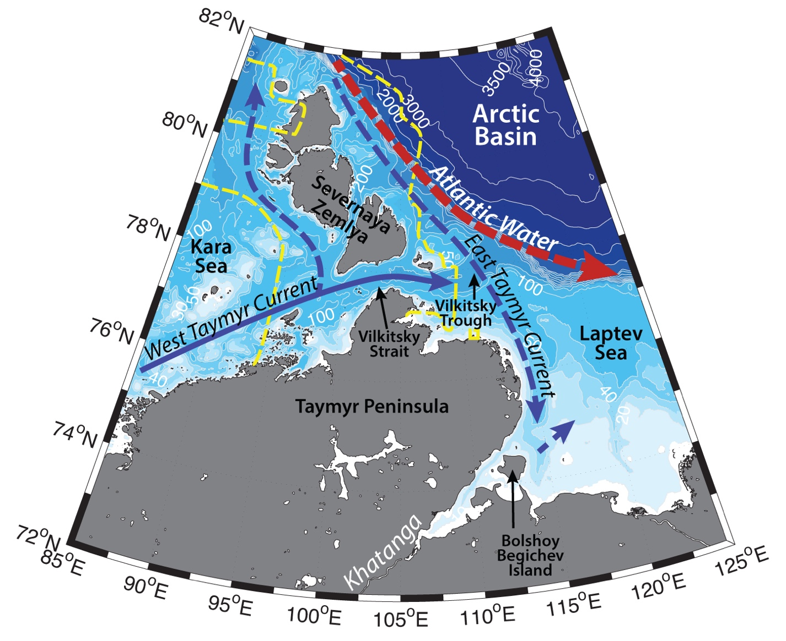

Schematic water circulation patterns and geographical place names in the Severnaya Zemlya region. Adopted from Janout et al. (2017). Dashed yellow line marks the studied region.
Hydrography of the Severnaya Zemlya region, as well as of Vilkitsky Strait (the largest strait between Kara and Laptev seas: length ~ 130 km, the least width – 56 km and the depth reaching 210 m), is determined by the hydrography of Kara and Laptev seas (as the majority of the water exchange between the Kara and Laptev seas happens through the straits), as well as deep Arctic Basin to the northwest of the archipelago. Hydrography of the Kara and Laptev seas, in turn, is characterized by the seasonal ice cover, large amounts of freshwater discharge, polynyas, and high seasonal variability.
The large portion of the Kara shelf is influenced by the fresh (S<20) water plume from the Ob and Yenisei rivers. The runoff from these rivers is approximately 412 km3 and 599 km3 annually respectively, most of it is discharged during ice-free season – typically June – October (e.g. Gordeev et al., 1996; Carmack, 2000; Guay et al., 2001; Williams and Carmack, 2015; Janout et al., 2015). This relatively thin (10-20 m) surface water mass is usually advected in a baroclinic eastward flow along the coast due to combined effects of the Coriolis force and large salinity gradient. The eastward spreading of this plume depends on the synoptic variability of atmospheric pressure patterns during summer periods (e.g. Janout et al., 2015; Carmack et al., 2015). Downwelling favorable winds in the region form a narrow quasi-geostrophic current along the Russian coast with the strong gradient with ambient marine waters, while upwelling-favorable winds hinder the eastward flow and enhance mixing. This eastward flow of river waters is also known as West Taymyr Current (e.g. Janout et al., 2015). It can partly turn northwards along the western coast of Severnaya Zemlya archipelago, bringing fresh river waters to the straits and fjords of the archipelago. The magnitude of the hydrographic gradient between river, surface Arctic waters, as well as underlaying deep cold and saline waters is prone to high synoptic variability under the influence of atmospheric forcing. Sometimes the hydrographic front can be well developed in Vilkitsky strait, where the West Taymyr current occupies the southern part of the strait close to Taymyr coast (known as Vilkitsky Strait Current; e.g. Janout et al., 2015). Some studies suggest, that West Taymyr Current further can wrap around Taymyr Peninsula and proceed southwards joining East Taymyr Current (Pavlov et al., 1996). This way it can further contribute to the Eurasian branch of the Riverine Coastal Domain (RCD) – a narrow (~<15km), shallow (~10m) contiguous feature, extending clockwise along the Arctic shores. RCD is driven by an aggregation of continental runoff and carry terrestrial physical and biogeochemical properties affecting marine life in the region. Between RCD and ambient sea forms a continuous gradient of various properties, which position depends on the state and behavior of the river plumes and various physical forcing affecting the dynamics of the coastal waters (Carmack et al., 2015).
Aksenov et al. (2011) and Janout et al. (2015), in turn, have discussed, that West Taymyr Current exits through ~200 m deep Vilkitsky Trough and propagate further eastwards along the Arctic continental slopes, joining the Arctic Boundary Current. Unfortunately, due to remoteness of the region and harsh winter conditions, detailed observations are missing and the fate of the currents still need verification.
While the river waters carry nutrients, their impact is thought to be small outside of estuarian zones. On the opposite, increase in river discharge may lead to the stronger stratification and less vertical mixing, therefore to the lower nutrient concentration in the bottom layer (Bauch, D., & Cherniavskaia, E., 2018). River discharge into Siberian seas provides freshwater to ventilate Arctic halocline and facilitates ice production on the shelf (Bauch et al., 2012). As a result of brine rejection, high salinity waters export from the Siberian shelf and contribute to the Arctic halocline (Bauch et al., 2012).
Northern parts of Kara and Laptev seas, as well as areas around Severnaya Zemlya archipelago, are occupied by Arctic waters. Here there is a weak northerly flow of freshened waters out from the shelf. During cold season the water column gets thoroughly mixed relatively quickly, lots of ice is being formed in the region, which too is exported into the basin. During summertime the water structure is weakly stratified with fresh cold Arctic waters in the surface layer, and waters close to freezing point at depth. In the northern part the region is bounded by the cold halocline waters. The islands of Severnaya Zemlya archipelago are covered with glaciers (approximately 50% of the surface area), which produce icebergs and further freshen the surface ocean layer, especially in the fjords of the archipelago.
In the vicinity of the continental slope to the northwest of the Severnaya Zemlya archipelago, as well as in Voronin trough in the Kara sea, upwellings may bring warm and salty Atlantic water (AW, T > 0 °C, 𝑆 > 33.64 psu) onto the Siberian shelf. AW are lying ~100-160 m beneath the shelfbreak and may contribute to ice melting and Eastern Severnaya Zemlya Polynya formation, affect the bottom layer, bring Atlantic species and some nutrients as well (e.g. Dmitrenko et al., 2010). The enhanced AW inflow into the Arctic leads to breakdown of the cold halocline layer, overall warming, and ice loss both in the deep basin and Russian shelf seas (e.g. Polyakov et al., 2017). While Atlantic waters have been found in the Vilkitsky Trough below 100 m (S~ 34.85, T~0 °C), no upwellings were observed (Janout et al., 2017).
During wintertime archipelago is surrounded by land-fast ice, which is usually broader in the Kara Sea. In the warm season depending on the atmospheric circulation ice floes can retain in the sea and block the straits. Wind forcing often causes flaw leads and polynyas form behind the land-fast ice in the region. Great Siberian Polynya is one of the main features, determining the high biological productivity and concentration of marine life in the Laptev Sea. It is a system of polynyas, which stretches across the whole sea and encompasses (according to various studies) Eastern Severnaya Zemlya Polynya, as well as East Taymyr Polynya, Anabar Lena Polynya, Northern New Siberian Polynya, Western New Siberian Polynya, Eastern New Siberian Polynya (e.g. Dmitrenko et al., 2005b). This polynya is known to be a recurring phenomenon and may be up to 200 km wide (Dmitrenko et al., 2005b). It produces cold (T<–1.6 °С) and salty (S>34) bottom waters for the Siberian shelf and Arctic Ocean due to convective overturning, and induce intensive ice formation, that later gets involved into the Transpolar Drift (Martin and Cavalieri, 1989; Winsor and Bjork, 2000; Eicken et al., 1997; Alexandrov et al., 2000). Vilkitsky Trough just to the east from Vilkitsky Strait is another spot for the cascading of near-freezing waters into Eurasian Basin.